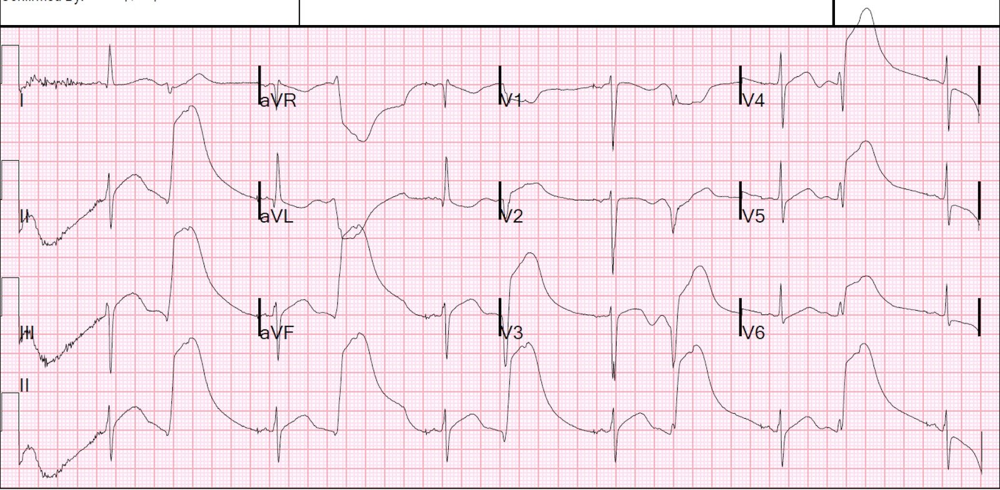
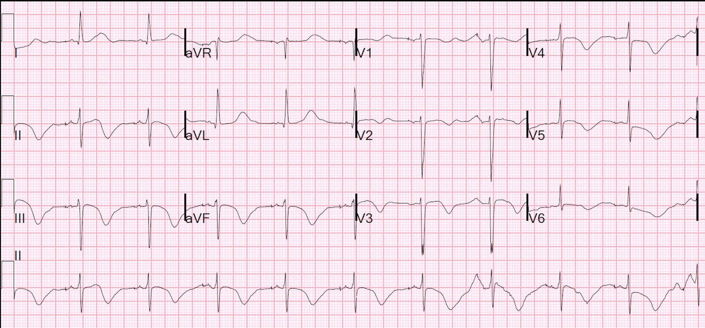
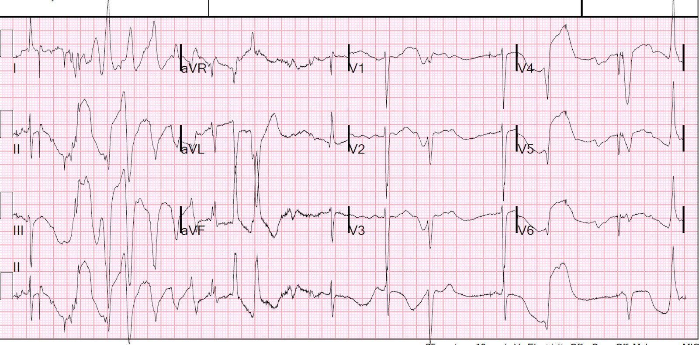
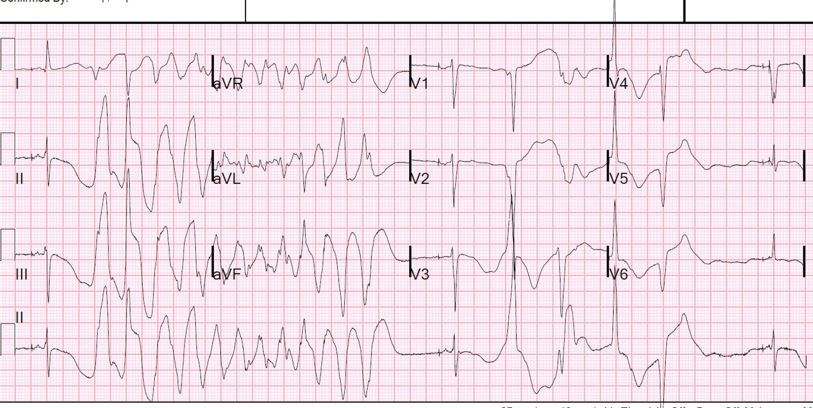
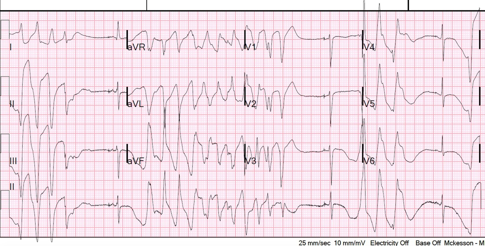
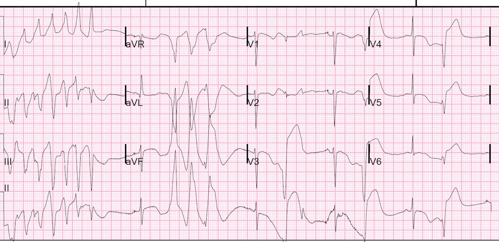
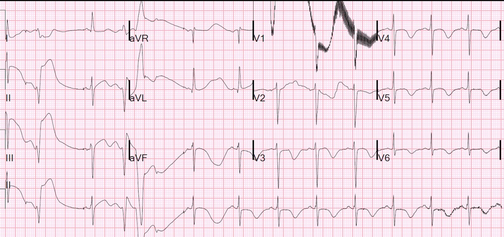
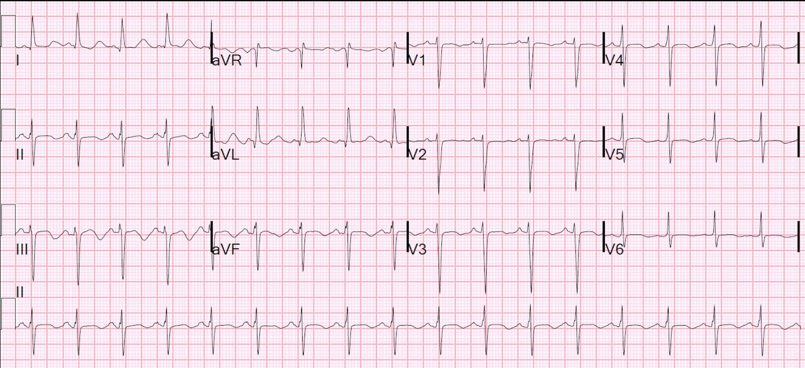
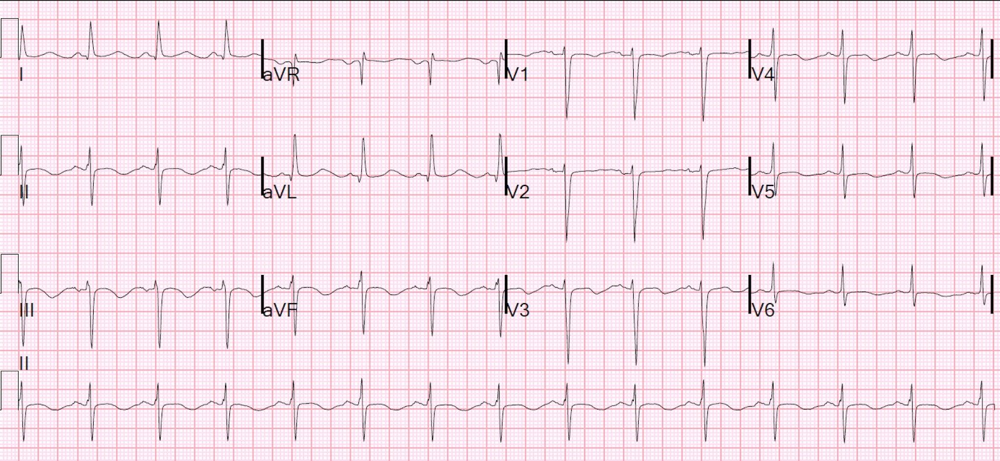
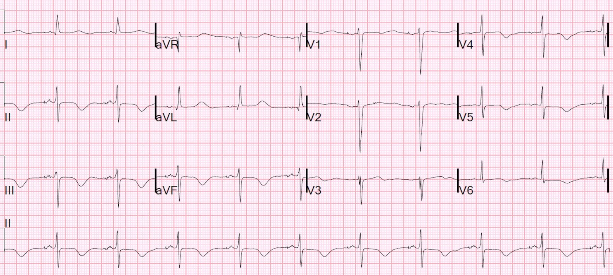

08/07/2015 — Hội chứng QT dài với nhịp nhanh thất đa dạng tái phát liên tục: Xử trí
Bản dịch tiếng Việt của bài "Long QT Syndrome with Continuously Recurrent Polymorphic VT: Management" – Dr. Smith’s ECG Blog. Giữ nguyên toàn bộ 10 hình ảnh của bản gốc.
Một phụ nữ trẻ đến viện vì bị máy khử rung tim cấy được phóng sốc từng lúc. Bệnh nhân lúc tỉnh lúc mất ý thức và không thể khai bệnh sử. Monitor cho thấy nhịp nhanh thất đa dạng (polymorphic ventricular tachycardia) từng lúc. Bác sĩ nhận được điện tâm đồ này đúng vào lúc đang chứng kiến các cơn ngất lặp đi lặp lại:
Mốc thời gian ban đầu (time zero)


Bệnh nhân được chuyển tới khu hồi sức. Ghi nhận có một ICD trên ngực bệnh nhân. Dấu hiệu sinh tồn bình thường khi nhịp bình thường.
Một điện tâm đồ khác được ghi 8 phút sau:


Như tôi đã chỉ ra nhiều lần, máy tính rất tệ trong việc chẩn đoán QT dài.
Xem các bài sau:
Do not trust the computerized QT when the QT is long (Đừng tin QT do máy tính đo khi QT dài)
Altered Mental Status, possible ingestion. What does the ECG show? (Rối loạn ý thức, nghi ngộ độc do uống. Điện tâm đồ cho thấy gì?)
QT ít nhất là 640 ms, và QTc (Bazett) cũng = 640 ms (khoảng RR = 1)
Monitor cho thấy các loạt nhịp nhanh tiếp tục xuất hiện, và một điện tâm đồ 12 chuyển đạo khác được ghi, lần này ở phút thứ 15:


Ở phút thứ 22, 4 điện tâm đồ liên tục được ghi:








Vì bệnh nhân liên tục mất ý thức và không tự bảo vệ được đường thở, bệnh nhân được đặt nội khí quản và bắt đầu dùng propofol. Bệnh nhân được cho 3 gam magnesi. Nhịp tim ổn định lại và điện tâm đồ này được ghi:


Và một bản ghi khác:


Tần số tim của bệnh nhân chậm lại:


Khai thác thêm bệnh sử cho thấy tiền sử QT dài, được cho là bẩm sinh, kèm tiền sử ngất và ngừng tim. Bệnh nhân cũng đang dùng Nadolol. Kết quả kali là 3,3 mEq/L và Mg là 1,7 mEq/L. Bệnh nhân được bù kali tĩnh mạch.
Bệnh nhân duy trì ổn định sau các can thiệp này.
Sau đó mới phát hiện bệnh nhân đã không uống Nadolol (một thuốc chẹn beta không chọn lọc).
Bệnh nhân được dùng lại Nadolol và tần số máy tạo nhịp được tăng lên 80, khiến khoảng R-R dài nhất có thể là 750 ms. Khi tần số tăng, các khoảng R-R giảm, do đó khoảng R-R đứng trước cũng giảm. Điều này làm ngắn QT và giảm khả năng xảy ra hiện tượng R trên T.
Nhưng chẳng phải thuốc chẹn beta (BB) sẽ làm giảm tần số tim, qua đó làm tăng khoảng R-R và do đó dẫn tới QT kéo dài hơn và tăng nguy cơ hay sao? Không, BB tác dụng bằng cách giảm nhẹ các tác động bất lợi của kích thích giao cảm lên kênh ion màng tế bào. Kích thích giao cảm tác động trực tiếp lên khoảng QT, dù điều này chủ yếu xảy ra ở LQT1 và LQT2. LQT3 thì khác. Đây là một bài viết đầy đủ trên UpToDate về chủ đề này, nếu bạn có quyền truy cập.
Vì sao xoắn đỉnh ngừng lại sau khi đặt nội khí quản và dùng propofol?
Đây là QT dài bẩm sinh: phần lớn các thể (LQT1 và LQT2, nhưng không phải LQT3) nặng lên do catecholamine, và được điều trị bằng thuốc chẹn beta (giống như Catecholaminergic Polymorphic Ventricular Tachycardia [VT đa dạng do catecholamine], nhưng vì những lý do khác). Bằng cách loại bỏ catecholamine nội sinh, đặt nội khí quản và an thần có thể đã là tất cả những gì cần thiết. Việc cho Mg và K cũng góp phần. Đợt này có lẽ được khởi phát bởi cả việc không tuân thủ dùng Nadolol lẫn hạ kali máu.
Thuốc chẹn beta (BB) làm gì? Xem bài báo này. Vấn đề này rất dễ gây bối rối vì tác dụng của chúng khác nhau với các típ QT dài khác nhau, với một số bằng chứng ít nhất là có vẻ mâu thuẫn (ít ra là mâu thuẫn đối với tôi, và tôi không phải chuyên gia!). LQT1 và 2 có hành vi tương tự nhau, nhưng LQT3 có vẻ ngược lại (dường như tương tự QT dài mắc phải). Với LQT1 và 2, truyền epinephrine làm kéo dài QT và làm tăng độ phân tán QT (QT dispersion: các khoảng QT khác nhau ở các vùng cơ tim, điều này cũng làm tăng tính dễ bị xoắn đỉnh); ngược lại, BB vừa làm ngắn khoảng QT vừa làm giảm độ phân tán, qua đó giảm nguy cơ xoắn đỉnh. Ngoại lệ: Tuy nhiên, ở LQT3, kích thích beta lại có tác dụng ngược lại, và thuốc chẹn beta có thể tạo thuận lợi cho xoắn đỉnh.
Tuy nhiên, dữ liệu còn mâu thuẫn: trong khi, phù hợp với những điều trên, các nghiên cứu quan sát cho thấy BB hiệu quả nhất ở LQT1 và cả ở LQT2, thì các nghiên cứu quan sát trên bệnh nhân LQT3 — thể mà lẽ ra phải ngược với LQT1 và 2 — lại cho kết quả không đồng nhất; chúng không nhất thiết cho thấy tác dụng bất lợi của BB. Xem bài báo này. Và bài báo này.
BB cũng làm giảm các PVC khởi kích (“hậu khử cực sớm” – early afterdepolarizations), qua đó giảm nguy cơ xoắn đỉnh.
Đây là một điểm gây bối rối khác: Tần số tim của bệnh nhân được tăng lên bằng tạo nhịp, nhưng lại được kìm giữ bằng Nadolol. Thực ra, điều này có vẻ là lý tưởng, vì tạo nhịp làm giảm nguy cơ xoắn đỉnh nếu tim được bảo vệ khỏi kích thích giao cảm: xem nghiên cứu này. Mặc dù tác dụng chính của chẹn beta là lên chính các kênh ion, UpToDate viết rằng: “Mục tiêu của điều trị bằng thuốc chẹn beta là làm giảm tần số tim tối đa đạt được khi gắng sức, và đặc biệt quan trọng ở bệnh nhân LQT1 là những người có nguy cơ tăng khi gắng sức. Một mối lo ngại về lý thuyết là thuốc chẹn beta cũng làm giảm tần số xoang, một đặc tính có thể kéo dài tái cực và có khả năng tạo thuận lợi cho TdP.”
Xử trí cấp xoắn đỉnh riêng do QT dài bẩm sinh: Tôi không tìm được bất kỳ hướng dẫn hay bài báo nào dành riêng cho điều trị cấp cứu xoắn đỉnh tái phát do QT dài bẩm sinh (khác với QT dài mắc phải), ngoại trừ nhận định sau trên UpToDate: “Ở những người có hội chứng QT dài bẩm sinh, có thể dùng thuốc chẹn beta để giảm tần suất ngoại tâm thu thất và làm ngắn khoảng QT.” Không có khuyến cáo nào về việc nên dùng thuốc chẹn beta nào trong tình huống cấp này. Trong điều trị mạn tính, Propranolol và Nadolol là tốt nhất, còn metoprolol có vẻ không hiệu quả. Cả propranolol lẫn nadolol đều là thuốc chẹn không chọn lọc (chẹn cả Beta-1 và Beta-2). Liệu việc không chọn lọc có phải là yếu tố then chốt cho điều trị không? Tôi không biết và cũng không tìm ra được. Chẹn beta không chọn lọc có các tác dụng bất lợi của nó, bao gồm co thắt phế quản. Hơn nữa, thuốc chẹn beta tôi ưa dùng nhất ở khoa cấp cứu (ED) là esmolol vì có thể ngừng ngay lập tức (thời gian bán thải rất ngắn). Tuy nhiên, esmolol chọn lọc beta-1 và tôi không biết liệu nó có hiệu quả hay không.
Đây là một bài tổng quan rất hay về xử trí mạn tính hội chứng QT dài.
Xử trí nhịp nhanh thất đa dạng (PMVT)
Các nguyên nhân PMVT không phải xoắn đỉnh (QT bình thường)
Thường gặp nhất là do thiếu máu cục bộ. Đây hầu như luôn là những đợt thiếu máu cục bộ rõ ràng, nặng, kèm đau ngực và/hoặc bất thường thiếu máu cục bộ rõ rệt trên điện tâm đồ. Cũng có thể do bệnh cơ tim có từ trước.
Xử trí VT đa dạng (kèm QT dài = xoắn đỉnh)
Phần lớn xoắn đỉnh tự giới hạn. Nếu không tự chuyển nhịp, cần khử rung nếu bệnh nhân không ổn định. Nếu có tự chuyển nhịp, nhiều khả năng sẽ tái phát, và điều trị nhằm phòng ngừa tái phát.
Điều trị các đợt xoắn đỉnh cấp:
1. Sốc điện chuyển nhịp hoặc khử rung nếu đang có cơn, đặc biệt nếu không ổn định
2. Loại bỏ tác nhân gây bệnh trong QT dài mắc phải (thường là một thuốc)
3. Điều chỉnh hạ kali máu, thậm chí tới mức hơi cao hơn bình thường. K giúp ngăn các hậu khử cực sớm (PVC) khởi phát xoắn đỉnh qua hiện tượng R trên T.
4. Cho 2-4g MgSO4 ngay cả khi nồng độ Mg bình thường (truyền liên tục 3-10 mg mỗi phút có thể hữu ích). Mg cũng giúp ngăn các hậu khử cực sớm (PVC) khởi phát xoắn đỉnh qua hiện tượng R trên T.
5. Chỉ khi là QT dài mắc phải: kích thích beta-adrenergic bằng isoproterenol
6. Nếu các biện pháp trên không hiệu quả, thì tạo nhịp vượt tần số (overdrive pacing), thường ở tần số khoảng 100 để ngăn mọi khoảng ngưng, hầu như luôn hiệu quả (tạo nhịp qua da là được để giải quyết tạm thời, làm cầu nối tới tạo nhịp qua tĩnh mạch).
7. Lidocaine cũng có thể có lợi vì có thể ức chế các PVC (hậu khử cực sớm) khởi phát xoắn đỉnh nếu chúng xảy ra trên sóng T.
8. Amiodarone có lợi ích còn đáng ngờ, và có thể gây hại. Bản thân amiodarone làm kéo dài khoảng QT, dù không làm tăng nhiều nguy cơ xoắn đỉnh
9. Không dùng thuốc chẹn beta trừ khi bệnh nhân đã có chẩn đoán QT dài bẩm sinh. Hoàn toàn ngược lại: isoproterenol.
10. Nếu là bẩm sinh [QT dài bẩm sinh, hoặc PMVT do catecholamine (có khoảng QT bình thường)], thì có thể có chỉ định chẹn beta cấp. Tôi sẽ thử esmolol trước, vì có thể ngừng được. Tuy nhiên, esmolol không chẹn beta-2 và tôi không rõ điều này có quan trọng và/hoặc cần thiết hay không. Nếu esmolol không hiệu quả, nên dùng propranolol tĩnh mạch.
Ở cuối bài là các hướng dẫn cụ thể hơn cho PMVT do catecholamine.
Điều trị PMVT cấp không phải xoắn đỉnh: tương tự VT đơn dạng (ngoại trừ PMVT do catecholamine, được trình bày bên dưới)
1. Sốc điện chuyển nhịp hoặc khử rung nếu đang có cơn
2. Điều chỉnh rối loạn điện giải, đặc biệt là hạ kali máu hoặc hạ magnesi máu
3. Phòng ngừa các đợt tiếp theo bằng lidocaine hoặc amiodarone, có thể dùng một thuốc chẹn beta như esmolol (thuốc mà bạn sẽ tránh trong mọi trường hợp xoắn đỉnh do QT dài mắc phải).
4. Các biện pháp điều trị chống thiếu máu cục bộ, kể cả tái thông mạch
5. Có thể cần máy khử rung–chuyển nhịp cấy được ngay cả khi đã tái thông mạch thành công
PMVT do catecholamine:
1. Sốc điện chuyển nhịp hoặc khử rung (tùy theo có mạch hay không), nhưng với điều trị trước bằng thuốc chẹn beta (nếu có thể), vì bản thân cú sốc có thể gây tăng vọt catecholamine, làm tình trạng nặng thêm và gây tái phát VT sớm.
2. Nên dùng thuốc chẹn beta tĩnh mạch. Esmolol là một lựa chọn rất tốt, vì có thời gian bán thải rất ngắn và có thể ngừng nếu có biến chứng. Liều: Esmolol có thể cho liều bolus 500 mcg/kg (0,50 mg/kg), sau đó truyền liên tục 50 mcg/kg/phút (0,05 mg/kg/phút). Có thể bolus lại nhiều lần khi cần, mỗi lần tăng tốc độ truyền thêm 50 mcg/kg/phút.
3. Với VT tái phát khi không có QT kéo dài, nên dùng amiodarone bolus và truyền liên tục. Amiodarone có tác dụng chẹn beta.
4. Verapamil được khuyến cáo dựa trên các nghiên cứu cho thấy thuốc ngăn được PMVT do gắng sức (3, 4). Tuy nhiên, tôi chưa tìm thấy y văn về việc dùng thuốc trong tình huống cấp. Bác sĩ điện sinh lý của chúng tôi viết rằng anh ấy sẽ thử dùng. Trong ca này, thuốc có vẻ đã làm mọi việc tệ hơn, nhưng đó là vấn đề của các ca đơn lẻ không có nhóm chứng.
4. [người dịch: nguyên văn đánh số trùng, đây là mục tiếp theo] An thần, như trong ca này, để giảm kích thích giao cảm? Hoặc, khuyến cáo nhóm IIb trong hướng dẫn ACC/AHA cho VT dai dẳng liên tục (incessant) là gây mê toàn thân.
Tránh isoproterenol và tạo nhịp vượt tần số. Với VT đa dạng do QT dài mắc phải (xoắn đỉnh), isoproterenol được chỉ định để tăng tần số xoang và ngăn xoắn đỉnh tái phát. Tuy nhiên, điều này làm CPVT nặng hơn. May mắn là xoắn đỉnh phổ biến hơn, nhưng nếu bạn biết bệnh nhân có CPVT, hãy tránh isoproterenol.
Tạo nhịp vượt tần số được xếp nhóm khuyến cáo IIb cho VT dai dẳng liên tục trong hướng dẫn ACC/AHA, nhưng không nên áp dụng điều này cho CPVT.
Tạo nhịp vượt tần số được dùng để phòng tái phát PMVT phụ thuộc khoảng ngưng (xoắn đỉnh), là loại nặng lên khi nhịp chậm và cải thiện khi nhịp nhanh). Sinh lý bệnh của CPVT rất khác với hội chứng QT dài. CPVT, không giống xoắn đỉnh, lại nặng lên khi nhịp nhanh. Xem bài này về xử trí xoắn đỉnh.